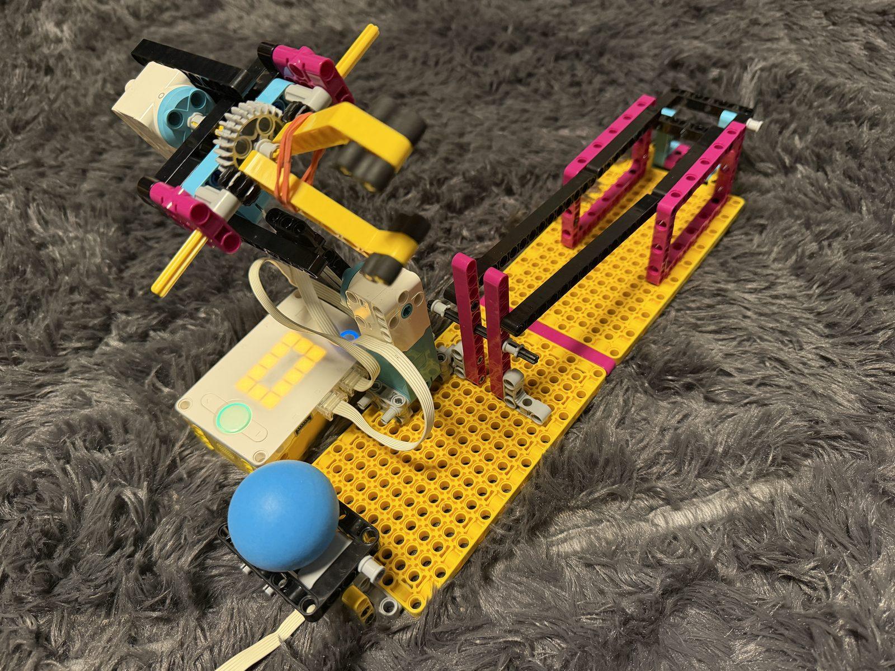
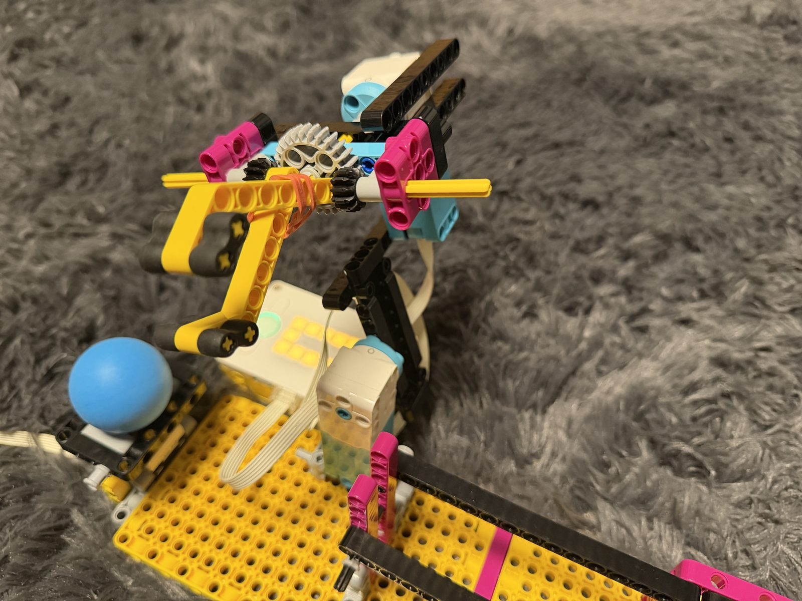
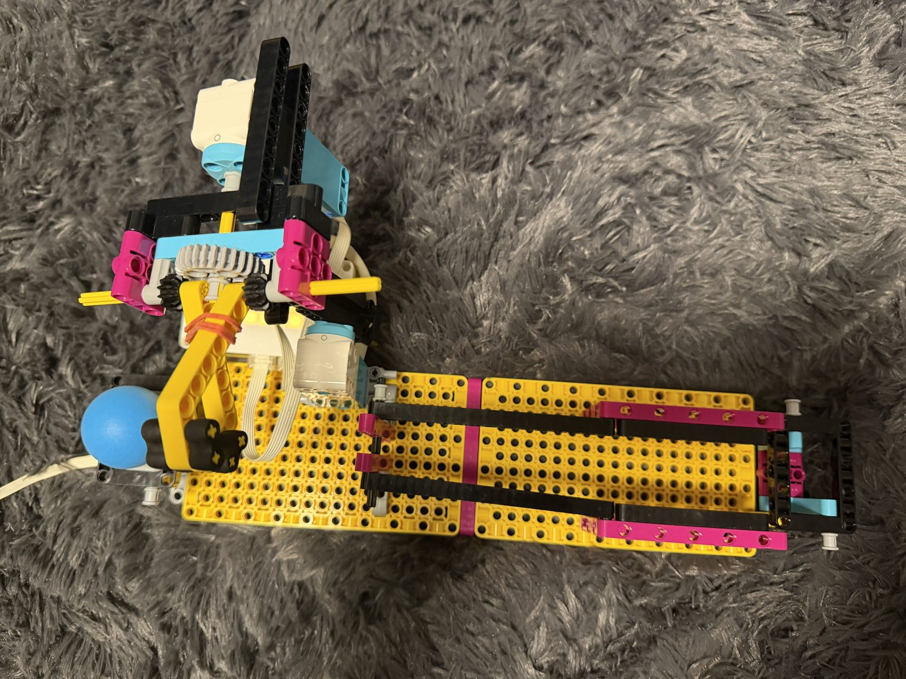

The Robotic Arm challenge was to build a robot that picks up a ball from a start base, moves it, and places it on an end base at the other end of the board.
My design uses two Medium Motors. Motor D opens and closes a gripper made of two yellow claw arms, and motor B rotates the arm to carry the ball. The arm drops the ball onto a bridge made of two black beams, and the ball then slides down the bridge to the end location.
My Python program runs the steps in order. Motor B moves the arm 110° to the pickup position and holds it there. Motor D runs for 7 seconds to close the gripper around the ball and holds it closed. Motor B then rotates the arm 180° anticlockwise, and motor D turns 120° to open the gripper and drop the ball onto the bridge. Finally, motor B turns 90° clockwise.


# Setup: medium motors are connected to ports B and D.
import runloop
import motor
from hub import port
# Set the motor speeds and gripper closing time.
MOTOR_B_SPEED = 200
MOTOR_D_SPEED = 150
D_RUN_TIME_MS = 7000
async def main():
# Move motor B to the pickup position and hold the arm there.
await motor.run_for_degrees(
port.B,
110,
MOTOR_B_SPEED,
stop=motor.HOLD
)
# Close the gripper and hold it closed.
await motor.run_for_time(
port.D,
D_RUN_TIME_MS,
-MOTOR_D_SPEED,
stop=motor.HOLD
)
# Rotate motor B anticlockwise for 180 degrees.
await motor.run_for_degrees(port.B, 180, -MOTOR_B_SPEED)
# Rotate motor D clockwise for 120 degrees.
await motor.run_for_degrees(port.D, 120, 800)
# Move motor B clockwise at the end.
await motor.run_for_degrees(port.B, 90, MOTOR_B_SPEED)
runloop.run(main())